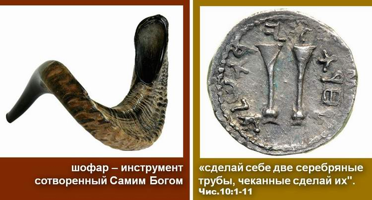

ШОФАР или ТРУБА? ПРОВЕРИМ?
ШОФАР или ТРУБА? Проверим, что говорит текст Писания?
Сегодня, когда мы пребываем внутри праздника Нового 5775 года., а в соответствии с Библией - Праздника Труб. Так он называется в синодальн. переводе Библии. Вместе со всеми сомневающимися я бы хотел выяснить кое-что!

Все больше христианских общин и отдельных верующих интересуются одним из самых еврейских символов - шофаром. Надо сказать, это и самый (на ряду с менрой) древний из еврейских символов. Но неувязочка начинается в случае, если вы не верите на слово и решаете таки открыть вашу Библию, чтобы прояснить себе - отчего столько шума? Недоумение начинается в момент, когда начнутся ваши поиски этого самого шофара в любом из русских переводов (не то, чтобы в переводах на другие языки дело обстояло иначе..) Вы не найдете ни единого упоминания шофара!
И правда, если набрать в поиске симфонии Стронга слово ШОФАР, то ничего подобного в русском переводе мы не найдем. Конечно, возникает вопрос о правомерности еврейской традиции, придающей шофару столь великое значение. Может быть это только традиция? Фольклор, с которым Св. Писания не знакомы?


Если мы предпримем иную попытку - найти в тексте Писания слово "ТРУБА", то конечно, наши поиски будут вознаграждены, и мы обнаружим множество мест, это слово содержащих. Ну и понятно, даже без поиска все (почти) мы помним такое название библейского праздника - Праздник Труб, - это один из Праздников Господних, на который все взрослое население Израиля совершало алию (восхождение) в Иерусалим на поклонение Всевышнему.
Но, если мы взглянем на номер Стронга этого самого слова "ТРУБА"и сделаем поиск не по слову, а по номеру (подробнее см. видео выше), то выяснится, что все не так просто. На деле окажется, что "чистокровных" труб, тех самых, о которых Бог повелел Моше сделать их из серебра, чтобы созывать народ и т.д., - всего 27 во всем тексте Библии. А большей части в тексте под словом перевода "ТРУБА" скрывается самый настоящий ШОФАР. Что и требовалось доказать.

Более чем в два раза шофаров в Писании больше, чем труб. Уже не говорю о том, что символика ШОФАРА И ТРУБЫ различается существенно (об этом подробно см. в статье "Высокое предназначение", а также в фильме "Голос Шофара").
Итак, что же скажем? Все таки полезно заглядывать в оригинальный текст. И тогда можно таки начать анализировать и осмысливать смысл употребления того или иного слова.
Подробно о символике ШОФАРА и его отличии от серебряной трубы см. фильм
См. также статьи о шофаре:
* часть 2 * часть 3 * часть 4 * часть 5
И видео:
автор: Эфраим Калиш